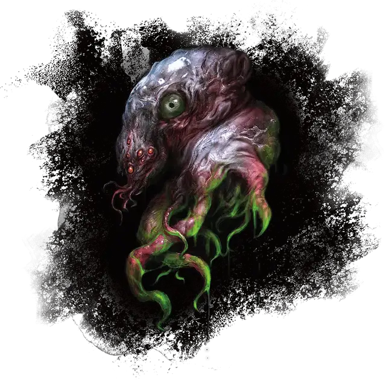

Отражение Илвааша
Refraction of Ilvaash
Огромная Аберрация (Свежеватель разума), законно-злая, именной НИП

Класс Доспеха 11 (природный доспех)
Хиты 199 (21к12 + 63)
Скорость 10 футов, плавая 10 футов, летая 30 футов (парит)
| мод | спас | ||
|---|---|---|---|
| СИЛ | 17 | +3 | +3 |
| ЛОВ | 10 | +0 | +0 |
| ТЕЛ | 17 | +3 | +3 |
| мод | спас | ||
|---|---|---|---|
| ИНТ | 23 | +6 | +11 |
| МДР | 20 | +5 | +10 |
| ХАР | 22 | +6 | +6 |
Навыки Запугивание +11, Магия +11, Проницательность +15, Убеждение +11
Сопротивление урону дробящий, колющий, рубящий от немагических атак
Иммунитет к урону психическая энергия, яд
Иммунитет к состояниям захват, истощение, окаменение, опутанность, отравление, паралич, сбивание с ног
Чувства слепое зрение 120 футов, пассивное Восприятие 15
Языки Общий, Глубинная речь, Подземный, Телепатия 100 фт.
Опасность 15 (13000 опыта)
Бонус мастерства +5
Особенности
Чутье существ. . Отражение знает о присутствии существ в радиусе 100 миль от себя, чей Интеллект 4 или выше. Оно знает расстояние и направление до каждого существа, а так же значение параметра Интеллект, но больше ничего не может почувствовать. Существо, защищенное заклинанием сокрытие разума [mind blank], необнаружимость [nondetection] или похожей магией, оно почувствовать не может.
Бестелесное перемещение. Отражение может перемещаться сквозь других существ и предметы, как если бы они были труднопроходимой местностью. Оно получает урон силовым полем 5 (1к10), если оканчивает ход внутри предмета.
Легендарное сопротивление (5/день). . Если отражение проваливает спасбросок, то он вместо этого может выбрать успех.
Сопротивление магии. . Отражение совершает с преимуществом спасброски против заклинаний и других магических эффектов.
Действия
Мультиатака. Отражение совершает две атаки Диссонирующим когтем.
Диссонирующий коготь. Рукопашная атака оружием. +11 к попаданию, досягаемость 10 футов или дистанция 120 футов, одно существо. Попадание: 25 (3к12+6) урона психической энергией. Если целью является существо, концентрирующееся на заклинании, его концентрация нарушается.
Взрыв разума (Перезарядка 5–6). Существа по выбору отражения, находящиеся в пределах 60 футов от него, должны успешно пройти спасбросок Интеллекта Сл 19 или получить 33 (5к10 + 6) урона психической энергией и стать ошеломленными на 1 минуту. Ошеломленное существо может повторять спасбросок в конце каждого своего хода, оканчивая эффект на себе при успехе.
Использование заклинаний. Отражение накладывает одно из следующий заклинаний, не нуждаясь в никаких материальных компонентах, и Интеллект является для них базовой характеристикой отражения (Сл спасброска от заклинания 19):
• неограниченно: обнаружение магии [detect magic], обнаружение мыслей [detect thoughts]
• 3/день каждое: рассеивание магии [dispel magic], изменение памяти [modify memory]
• 1/день каждое: слабоумие [feeblemind], уход в иной мир [plane shift] (только на себя)
Телепортация. Отражение телепортируется вместе со всем снаряжением, которое оно носит или несёт, в свободное пространство, которое оно может видеть в пределах 120 футов
Легендарные действия
Отражение может совершить 3 легендарных действия, выбирая из представленных ниже вариантов. За один раз можно использовать только одно легендарное действие, и только в конце хода другого существа. Отражение восстанавливает использованные легендарные действия в начале своего хода.
Разрушитель разума. Отражение нацеливается на существо в пределах 120 футов от себя и нарушает его ментальные процессы, в результате чего цель совершает с помехой проверки характеристик, броски атак, и спасброски до конца следующего хода цели.
Выпустить коготь (Стоит 2 легендарных действия). Отражение совершает одну атаку Диссонирующим когтем.
Описание
Илвааш был сформирован из останков бога свежевателей разума Илсенсайна, Бога-Мозга. Когда Ильсенсин покинул Дальний предел, чтобы основать божественный домен в другом месте, части Бога-мозга отделились от него и пробудили разум. Это Илвааш, Диссонирующая Личность.
Отражение Илвааша обладает лишь малой толикой силы божества, но, тем не менее, является грозным противником.